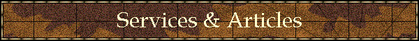
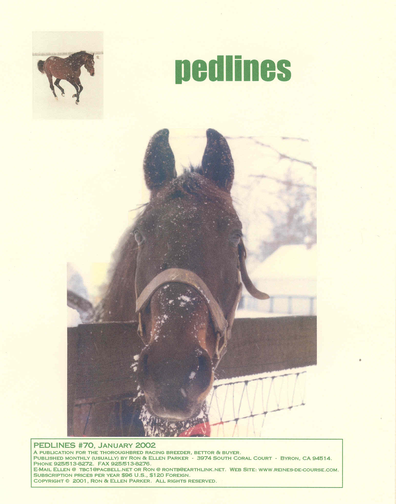

|
 |
|
|
 Pedlines
In
late 1995, given the paucity of information being published about female
families, we decided to start a newsletter, which we called Pedlines.. Since
both of us were long-time turf writers and the printed media was our forte, the
newsletter offered us a variety of expression that we would not be able to
accomplish in the commercial publications.
And, since the newsletter did not solicit advertising, it was free to
‘tell it like it is’ about bloodlines and markets, be it complimentary or
critical. As
Pedlines approaches its fifth anniversary, we feel it still accomplishes
its original purpose: to offer insights into pedigrees not found in any other
publication. Certainly we are proud
of a comment from the breeder of an Eclipse Award winner that she would rather
read Pedlines than any other Thoroughbred publication, and are flattered
by Mr. Forsythe’s endorsement. Published
monthly, the 20+ pages of Pedlines tries to cover a lot of territory.
Female families are certainly the main theme, and we look at them both
from the historical perspective as well as how they fit in today's market.
But stallions are not ignored, and we try to project the strengths (or
weaknesses) new sires are likely to pass on.
Even this falls back to family analysis since Thoroughbreds breed on in
accordance with their genetic heritage, not simply their own racing performance. For those with a deep interest in pedigrees we often
include six generation printouts to help the reader trace the influences that
are discussed and analyzed. Pedlines
also offers a variety of other sections when the material so warrants.
Readers are encouraged to ask questions, which we try and answer in the
newsletter. We periodically include
Ellen’s selections from Thoroughbred sales.
While analyzing catalogs for specific buyers and/or breeders remains a
for-pay project (see “Mating Services”), these sales picks are horses whose
pedigree caught her eye and are simply part of the newsletter.
(Unlike others who may offer their sales choices for hundreds of
dollars). And, because most people like to wager a few coins on
Thoroughbreds, Ron can sometimes be found (rightly or wrongly) commenting on a
runner who has caught his attention, or simply continuing his quest to prove
that betting on Thoroughbreds is a better investment than the stock market.
And, just for fun, we even have a contest now and then for modest prizes,
usually related to the Triple Crown, Breeders’ Cup or Eclipse Awards. Subscriptions
to Pedlines are $96 per year for 12 issues ($108 outside U.S.).
Ron likes to note that’s cheaper than most stock selection newsletters,
which are generally bad anyway; both of us feel it’s a bargain in view of the
depth of information provided in a publication that is small enough to recognize
its readers as individuals. Think of it this
way: $96 won’t buy much of a Pick 6 ticket, whereas Pedlines lasts a whole
year. Just print and mail the coupon below
and we'll do the rest.
|
Copyright © 2001 Ron & Ellen Parker
|